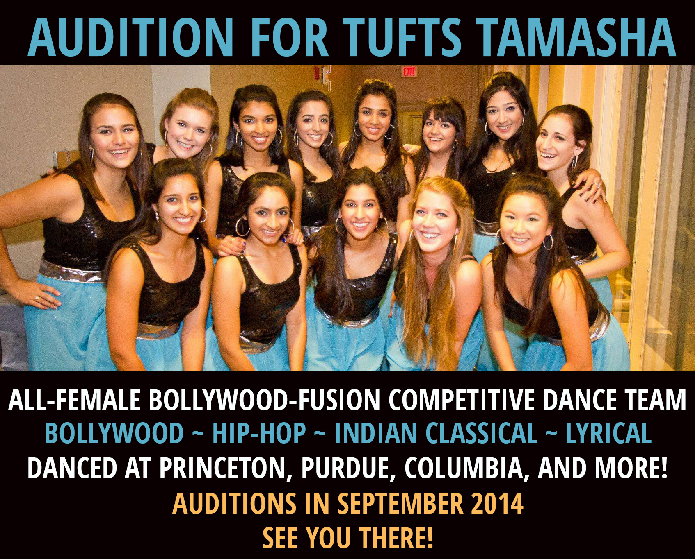
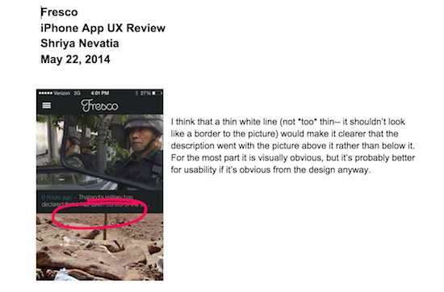
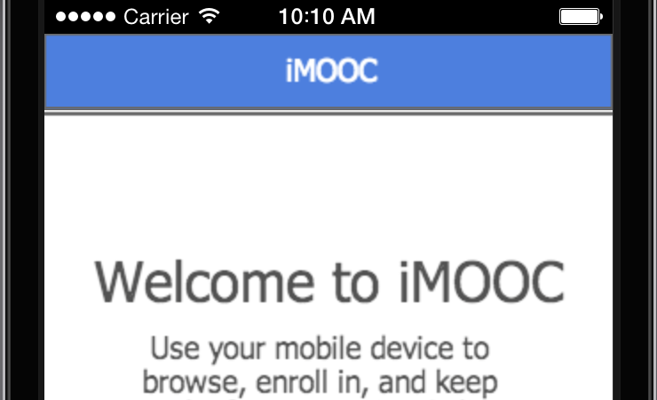
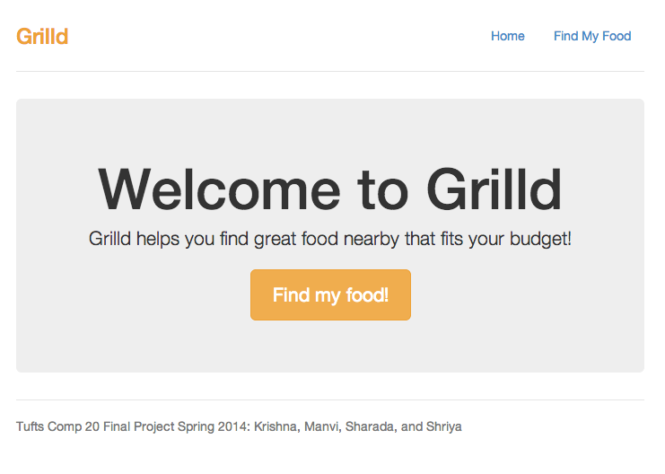
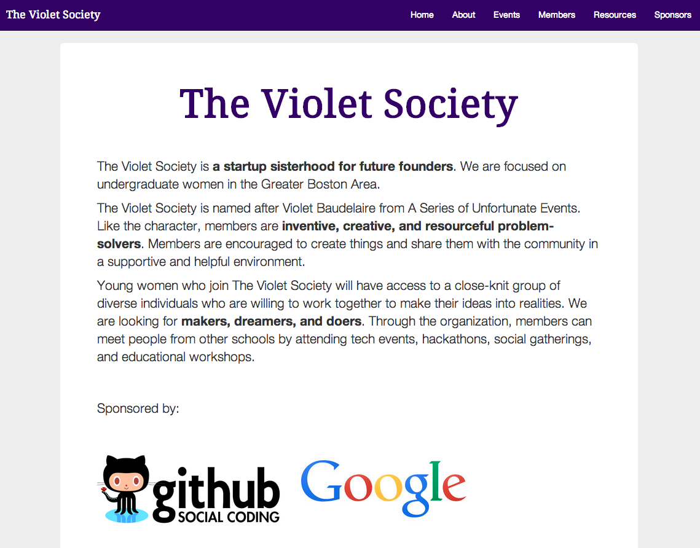
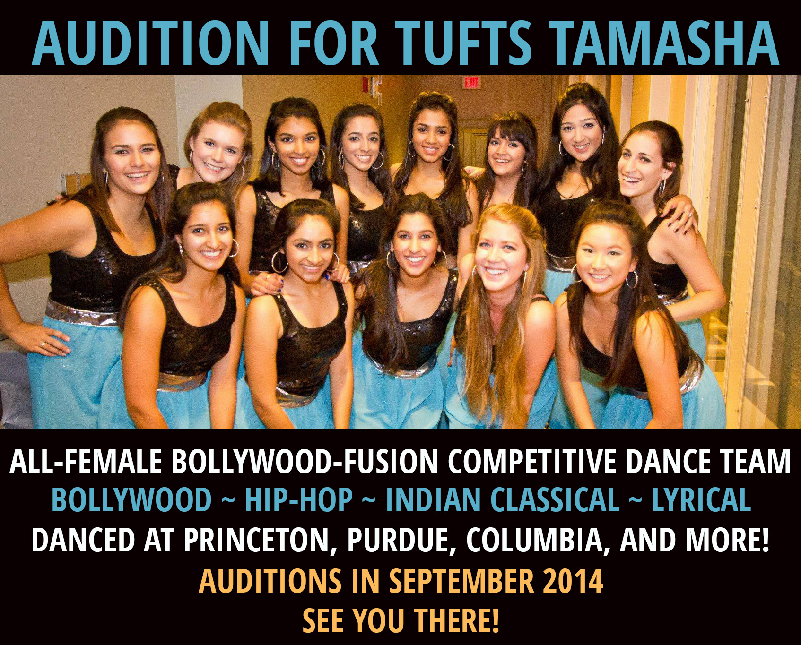
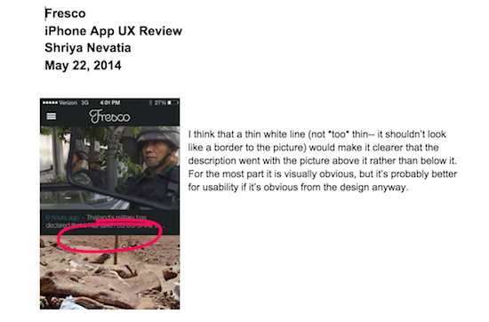
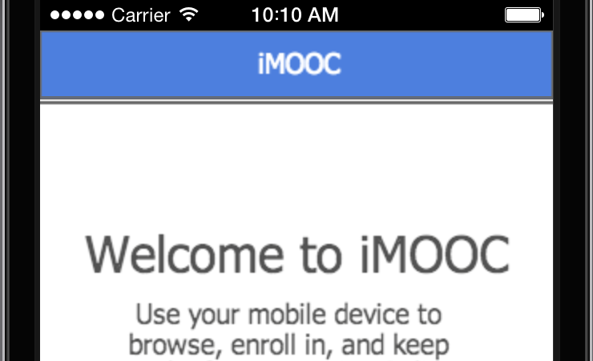
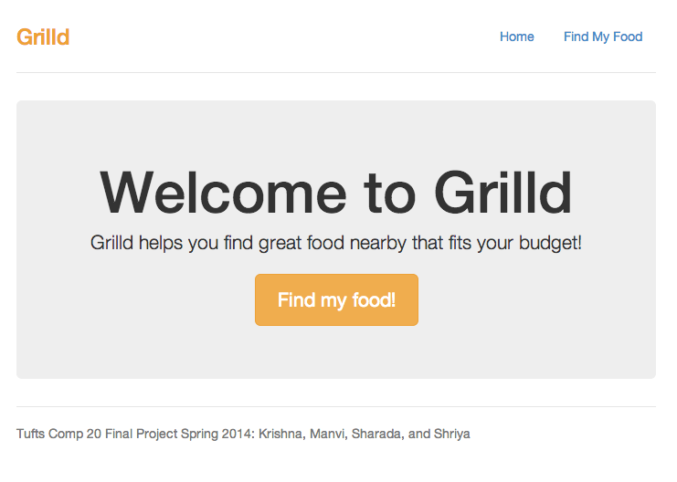
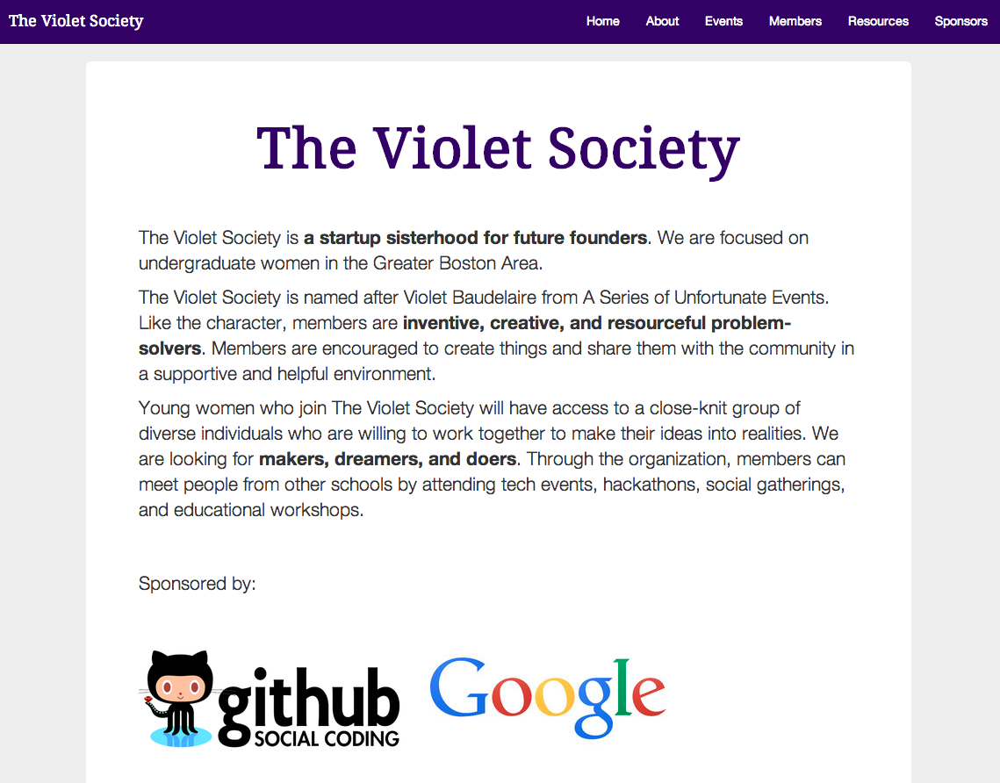

PORTFOLIO

TUFTS TAMASHA & TUFTS ASSOCIATION OF SOUTH ASIANS

FRESCO & TISKET UX REVIEWS

iMOOC

GRILLD

THE VIOLET SOCIETY

TROVE
I'm a new graduate of Tufts University and I majored in Computer Science. I am actively looking for a job in User Experience Design or Front-End Development. I have had a wide variety of experiences with different technology organizations. My positions have ranged from UX Design to Front-End Development to Marketing & Branding.
I am passionate about developing strong communities. I founded an organization in Fall of 2013 called The Violet Society for undergraduate women who are interested in programming, entrepreneurship, or design. I also have extensive leadership and organizational experience from college dance and cultural groups. In addition, I am passionate about education and taught Science at Breakthrough Cambridge in Summer and Fall of 2011.
I have been a dancer and choreographer for over sixteen years (Bharatnatyam, Bollywood, Ballet, Tap, Jazz, and Contemporary) and I was co-captain of Tufts Tamasha, a competitive all-female Bollywood-Fusion dance team, in my final year at Tufts. In my spare time I love to do dance workouts like BollyX, Pound, and Masala Bhangra. I also enjoy reading technology blogs, books, and magazines.
Tufts University
Worldi
Pegasystems
Tufts Center for Engineering Education & Outreach
Her Campus
Project Breaker
Breakthrough Cambridge
Tufts Tamasha
Tufts Association of South Asians
Tufts Community Union Senate
Tufts Institute for Global Leadership

TUFTS TAMASHA & TUFTS ASSOCIATION OF SOUTH ASIANS

FRESCO & TISKET UX REVIEWS

iMOOC

GRILLD

THE VIOLET SOCIETY
TROVE